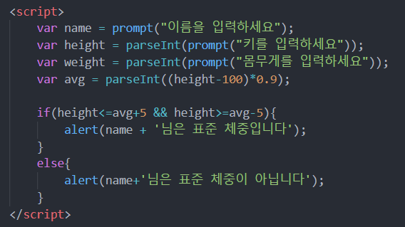

1. 식별자
2. 문장
- 자바스크립트 프로그램의 기본 단위는 문장
- 문장과 문장을 구분하기 위해 세미콜론(;) 사용
- 주석문
// 해당 문장만 주석 처리를 해줌
/*원하는 지점부터 지정한 끝 지점까지 주석 처리를 해줌*/
3. 변수
- 변수 선언 : var 변수명 = 초기값; // 초기값은 생력 가능(undefined)
- 리터럴에 따라 데이터 타입이 동적으로 결정됨
4. 데이터 타입
- 기본 타임 (5가지)
- 숫자(Number) 타입
-정수, 실수 구분 없음, C언어에서 실수와 유사
- 문자열(String) 타입
-' ' 또는 " "로 생성
-문자 배열처럼 인덱스로 접근 가능
-한 번 정의된 문자열은 변하지 않음(읽기만 가능)
- 논리(Boolean) 타입
- 참 거짓
- null
- 값이 비어있음
- undefined
- 값이 할당되지 않음
5. 자바스크립트의 식과 연산
- 산술 연산자
- 5가지 : +, -, *, /, %
- 나누기 연산 결과는 실수
- 증감 연산자
- 전위 연산자 : ++a
- 후위 연산자 : a++
- 대입 연산자
- 오른쪽 식의 결과를 왼쪽 변수에 대입
- 대입 연산자 종류 : =, +=, -=, *=, /=, %=
- 비교 연산자
- 두 값 비교, true나 false의 결과를 내는 연산
- 비교 연산자 종류 : <, >, <=, >=, ==, !=
- 논리 연산자
- 논리 연산 : AND, OR, NOT
- 논리 연산자 종류 : &&, ||, !
- 삼항 조건 연산자
- 조건 ? 식1 : 식2
- 조건이 true면 전체 결과는 식1의 계산 값, 조건이 false이면 식2의 계산 값
- 문자열 연산자
6. 예제 ; 표준 체중 계산기
- 이름, 키, 몸무게를 차례대로 입력 받기
- 표준 체중 = 키 - 5 <= { (키 - 100) * 0.9 } <= 키 + 5
- 표준 체중인지 아닌지 확인 창 띄우기
예시 코드
